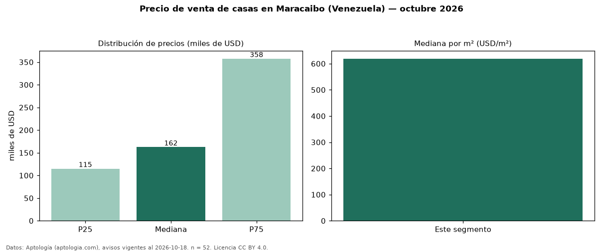

Precio de venta de casas en Maracaibo (Venezuela) — octubre 2026
En Maracaibo (Venezuela), la mediana de precio de venta de casas es USD 162.500, según 52 avisos vigentes. Por metro cuadrado, la mediana es USD 619/m² (n = 50 avisos con área). La mediana de toda la vivienda en venta de Maracaibo (USD) es USD 135.000; las casas quedan +20 %. La mitad central de los avisos va de USD 115.000 a USD 357.500 (razón 3,1), una dispersión alta. El área mediana anunciada es 350 m². El segmento con más oferta es el de 3 o más habitaciones (49 avisos, mediana USD 165.000). Datos: Aptología (aptologia.com), CC BY 4.0 — https://www.aptologia.com/ve/venta/maracaibo. Archivos: PDF, CSV con las cifras y gráfica PNG.

| Avisos únicos | 52 |
|---|---|
| Percentil 25 | COP 115.000 |
| Mediana | COP 162.500 |
| Percentil 75 | COP 357.500 |
| Mediana por m² | COP 618 |
Fuente: avisos vigentes de portales inmobiliarios recopilados por Aptología, deduplicados (mínimo 30 avisos únicos por celda). Precios pedidos, no cerrados. Fecha: 2026-10-18.